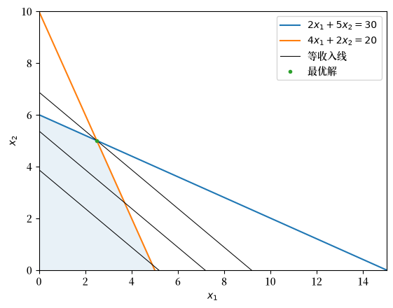

38. 线性规划#
在本讲中，我们将需要以下导入。
import numpy as np
from scipy.optimize import linprog
import matplotlib.pyplot as plt
from matplotlib.patches import Polygon
import matplotlib as mpl
FONTPATH = "fonts/SourceHanSerifSC-SemiBold.otf"
mpl.font_manager.fontManager.addfont(FONTPATH)
plt.rcParams['font.family'] = ['Source Han Serif SC', 'DejaVu Sans']
38.1. 概述#
线性规划 问题旨在在一组线性等式和/或不等式约束下，最大化或最小化一个线性目标函数。
线性规划问题是成对出现的：
一个原始的 原始 问题，以及
一个相关的 对偶 问题。
如果原始问题涉及 最大化，则对偶问题涉及 最小化。
如果原始问题涉及 最小化，则对偶问题涉及 最大化。
在本讲中我们将
介绍两个示例问题，
描述一种 标准形式，使我们能够将任何线性规划问题交给黑箱求解器处理，
使用 SciPy 求解这两个示例，以及
研究 对偶 问题及其在影子价格方面的经济学解释。
我们将使用 SciPy 的 linprog 函数来求解我们的线性规划问题，该函数调用高性能的 HiGHS 求解器。
See also
在另一讲中，我们将使用线性规划方法来解决 最优运输问题。
让我们从一些线性规划问题的例子开始。
38.2. 示例 1：生产问题#
这个例子由 [Bertsimas, 1997] 创建。
假设一个工厂可以生产两种商品，称为产品 \(1\) 和产品 \(2\)。
生产每种产品都需要材料和劳动。
销售每种产品会产生收入。
每单位所需的材料和劳动投入及其收入如下表所示：
产品 1 |
产品 2 |
|
|---|---|---|
材料 |
2 |
5 |
劳动 |
4 |
2 |
收入 |
3 |
4 |
可用的材料为 30 单位，劳动为 20 单位。
公司的问题是构建一个生产计划，利用其 30 单位的材料和 20 单位的劳动来最大化其收入。
令 \(x_i\) 表示公司生产的产品 \(i\) 的数量，\(z\) 表示总收入。
该问题可以表述为：
我们允许 \(x_1\) 和 \(x_2\) 取任何非负 实数 值。
如果我们转而要求它们必须是整数，那么这个问题将变成一个 整数规划 问题，这通常要难解得多。
允许取实数值使可行集保持凸性，而这种凸性正是线性规划如此易于处理的原因。
38.2.1. 图解法#
由于这个问题只有两个决策变量，我们可以用图解法求解。
下图说明了公司的约束条件和等收入线。
等收入线显示了产生相同收入的产品 1 和产品 2 的所有组合。
findfont: Failed to find font weight normal, now using 600.
findfont: Failed to find font weight normal, now using 600.
findfont: Failed to find font weight normal, now using 600.
{kind=link}

蓝色区域是可行集合，在该集合内所有约束都得到了满足。
平行的黑线是等收入线。
公司的目标是在保持处于可行集合内的同时，将等收入线尽可能地向上推。
可行集合与最高等收入线的交点界定了最优集合。
在这个例子中，最优集合是点 \((2.5, 5)\)，它产生的收入为 \(z = 3 \times 2.5 + 4 \times 5 = 27.5\)。
这种图解法在二维情形下运作得很好。
但它无法扩展：当决策变量超过两个或三个时，我们就无法再画出可行集合了。
我们的下一个例子有五个决策变量，因此我们需要一种系统化的计算方法。
38.3. 示例 2：投资问题#
我们现在考虑一个由 [Hu, 2018] 提出并解决的问题。
一个共同基金有 $100,000 美元 可在三年内投资。
有三种投资选择可供选择：
年金：基金可以在每年的开始支付相同金额的新资本，并在第三年末获得投资总资本的130%的收益。一旦共同基金决定投资于此年金，它必须在三年内持续投资。
银行账户：基金可以在每年的开始存入任何金额，并在该年末获得其资本加上6%的利息。此外，共同基金被允许每年在开始时借款不超过 $20,000，并被要求在年末偿还借款金额加上6%的利息。共同基金可以选择在每年的开始存款或借款。
企业债券：在第二年的开始，企业债券变得可用。基金可以在第二年开始时购买不超过 $50,000 美元的债券，并在第三年末获得130%的投资回报。
共同基金的目标是在第三年末最大化其拥有的总回报。
我们可以将此表述为一个线性规划问题。
让 \(x_1\) 表示投入年金的金额，\(x_2, x_3, x_4\) 表示三年初的银行存款余额，\(x_5\) 表示投资于企业债券的金额。
当 \(x_2, x_3, x_4\) 为负时，意味着共同基金从银行借款。
下表展示了共同基金的决策变量以及上述时序协议：
第1年 |
第2年 |
第3年 |
|
|---|---|---|---|
年金 |
\(x_1\) |
\(x_1\) |
\(x_1\) |
银行账户 |
\(x_2\) |
\(x_3\) |
\(x_4\) |
企业债券 |
0 |
\(x_5\) |
0 |
共同基金的决策过程遵循以下时序协议：
在第一年的开始，共同基金决定投资多少在年金中，存入银行多少。该决策受以下约束：
\[ x_1 + x_2 = 100,000 \]在第二年的开始，共同基金的银行余额为 \(1.06 x_2\)。它必须在年金中保留 \(x_1\)。它可以选择将 \(x_5\) 投入企业债券，并将 \(x_3\) 存入银行。这些决策受以下约束：
\[ x_1 + x_5 = 1.06 x_2 - x_3 \]在第三年的开始，共同基金的银行账户余额等于 \(1.06 x_3\)。它必须再次投资 \(x_1\) 在年金中，留下银行账户余额为 \(x_4\)。这种情况可以用以下约束来总结：
\[ x_1 = 1.06 x_3 - x_4 \]
共同基金的目标函数，即其在第三年末的财富为：
因此，共同基金面临的线性规划为：
这个问题有五个决策变量和三个等式约束，以及若干界约束。
与示例 1 不同，我们无法用二维图形表示它并读出解。
为了解决这类问题，我们首先将其转化为 标准形式，然后再交给求解器处理。
38.4. 标准形式#
为了
统一最初以表面不同形式表述的线性规划问题，以及
拥有一种便于放入黑箱软件包的形式，
花一些精力来描述 标准形式 是很有用的。
我们的标准形式是：
让
标准形式的线性规划问题可以简洁地表达为：
这里，\(Ax = b\) 意味着 \(Ax\) 的第 \(i\) 个元素等于 \(b\) 的第 \(i\) 个元素，这个等式对于每个 \(i\) 都成立。
同样，\(x \geq 0\) 意味着 \(x_j\) 对于每个 \(j\) 都大于等于 \(0\)。
38.4.1. 有用的变换#
知道如何将一个最初未以标准形式表述的问题转换为标准形式是很有用的。
通过以下步骤，任何线性规划问题都可以转化为一个等效的标准形式线性规划问题。
目标函数：如果一个问题最初是一个受限的 最大化 问题，我们可以构建一个新的目标函数，该函数是原始目标函数的加法逆。然后转换的问题是一个 最小化 问题。
决策变量：对于一个变量 \(x_j\) 满足 \(x_j \le 0\)，我们可以引入一个新变量 \(x_j' = - x_j\) 并将其代入原始问题。对于一个对符号没有限制的自由变量 \(x_i\)，我们可以引入两个新变量 \(x_j^+\) 和 \(x_j^-\)，使得 \(x_j^+, x_j^- \ge 0\)，并用 \(x_j^+ - x_j^-\) 替换 \(x_j\)。
不等式约束：对于一个不等式约束 \(\sum_{j=1}^n a_{ij}x_j \le b_i\)，我们可以引入一个新变量 \(s_i\)，称为 松弛变量，使得 \(s_i \ge 0\)，并用 \(\sum_{j=1}^n a_{ij}x_j + s_i = b_i\) 替换原始约束。
让我们将上述步骤应用于上面描述的两个示例。
38.4.2. 示例 1：生产问题#
原始问题是：
这个问题等同于以下标准形式的问题：
38.4.3. 示例 2：投资问题#
原始问题是：
这个问题等同于以下标准形式的问题：
38.5. 计算：使用 SciPy 求解#
包 scipy.optimize 提供了一个函数 linprog 用于求解以下形式的线性规划问题：
\(A_{eq}, b_{eq}\) 表示等式约束矩阵和向量，\(A_{ub}, b_{ub}\) 表示不等式约束矩阵和向量。
Note
默认情况下，\(l = 0\) 且 \(u = \text{None}\)，除非通过参数 bounds 明确指定。
请注意，我们不需要自己将问题转换为标准形式。
linprog 可以直接接受不等式约束、等式约束和变量的界。
不过，理解标准形式仍然是有帮助的，因为求解器内部正是使用这种形式。
默认情况下，linprog 使用 highs 方法，该方法调用高性能的 HiGHS 求解器。
我们将 linprog 当作一个 黑箱 来使用：我们用 \(c\)、\(A\) 和 \(b\) 来描述问题，求解器则返回一个最优解。
38.5.1. 示例 1：生产问题#
现在让我们使用 SciPy 来求解示例 1。
由于 linprog 是对目标函数进行 最小化，而我们的问题是 最大化 问题，因此我们传入 \(-c\)，并对结果取负。
# 构造参数
c_ex1 = np.array([3, 4])
# 不等式约束
A_ex1 = np.array([[2, 5],
[4, 2]])
b_ex1 = np.array([30, 20])
一旦我们解决了问题，就可以使用布尔属性 success 查看求解器是否成功解决了该问题。如果成功，则 success 属性被设置为 True。
# 解决问题
# 我们在目标上加上负号，因为 linprog 进行最小化
res_ex1 = linprog(-c_ex1, A_ub=A_ex1, b_ub=b_ex1)
if res_ex1.success:
# 我们使用负号来获得最优值（最大化值）
print('最优值:', -res_ex1.fun)
print(f'(x1, x2): {res_ex1.x[0], res_ex1.x[1]}')
else:
print('该问题没有最优解。')
最优值: 27.5
(x1, x2): (np.float64(2.5), np.float64(5.0))
这证实了我们通过图解法得到的答案：生产 \(2.5\) 单位的产品 1 和 \(5\) 单位的产品 2，产生最大收入 \(27.5\)。
linprog 返回的松弛值是一个一维 NumPy 数组，其中每个元素度量每个不等式约束的差值 \(b_{ub} - A_{ub}x\)。
res_ex1.slack
array([0., 0.])
两个松弛值都为零，这说明在最优解处材料约束和劳动约束都恰好取等（都是紧约束）。
有关更多详细信息，请参见 官方文档。
38.5.2. 示例 2：投资问题#
现在让我们求解投资问题。
这次我们使用等式约束 A_eq、b_eq，并为每个变量提供界。
这些界刻画了借款限额（\(x_2, x_3, x_4 \ge -20{,}000\)）和企业债券的上限（\(0 \le x_5 \le 50{,}000\)）。
# 构造参数
rate = 1.06
# 目标函数参数
c_ex2 = np.array([1.30*3, 0, 0, 1.06, 1.30])
# 等式约束
A_ex2 = np.array([[1, 1, 0, 0, 0],
[1, -rate, 1, 0, 1],
[1, 0, -rate, 1, 0]])
b_ex2 = np.array([100_000, 0, 0])
# 决策变量的界
bounds_ex2 = [( 0, None),
(-20_000, None),
(-20_000, None),
(-20_000, None),
( 0, 50_000)]
让我们解决这个问题并检查 success 属性的状态。
# 求解问题
res_ex2 = linprog(-c_ex2, A_eq=A_ex2, b_eq=b_ex2,
bounds=bounds_ex2)
if res_ex2.success:
# 我们使用负号来获得最优值（最大化值）
print('最优值:', -res_ex2.fun)
x1_sol = round(res_ex2.x[0], 3)
x2_sol = round(res_ex2.x[1], 3)
x3_sol = round(res_ex2.x[2], 3)
x4_sol = round(res_ex2.x[3], 3)
x5_sol = round(res_ex2.x[4], 3)
print(f'(x1, x2, x3, x4, x5): {x1_sol, x2_sol, x3_sol, x4_sol, x5_sol}')
else:
print('该问题没有最优解。')
最优值: 141018.24349792697
(x1, x2, x3, x4, x5): (np.float64(24927.755), np.float64(75072.245), np.float64(4648.825), np.float64(-20000.0), np.float64(50000.0))
SciPy 告诉我们，最佳投资策略是：
在第一年的开始，互助基金应购买 \( \$24,927.75\) 的年金。其银行账户余额应为 \( \$75,072.25\)。
在第二年的开始，互助基金应购买 \( \$50,000 \) 的公司债券，并继续投资于年金。其银行账户余额应为 \( \$ 4,648.83\)。
在第三年的开始，互助基金应从银行借款 \( \$20,000\) 并投资于年金。
在第三年末，互助基金将从年金和公司债券中获得收益，并偿还银行贷款。最终将拥有 \( \$141,018.24 \)，因此其在三个时期内的总净回报率为 \( 41.02\% \)。
38.6. 对偶#
每一个线性规划问题（我们称之为 原始 问题）都有一个与之相关的线性规划问题，称为它的 对偶 问题。
对偶问题为原始问题提供了有价值的信息，并且它的变量具有重要的经济学解释——影子价格。
让我们用示例 1 中的生产问题来阐述这些思想。
38.6.1. 生产问题的对偶#
回顾原始的生产问题：
设想有一位外部投资者想购买该公司的全部材料和劳动。
投资者必须为每单位材料选定一个价格 \(y_1\)，为每单位劳动选定一个价格 \(y_2\)。
为了说服公司出售而不是自行生产，这些价格必须使得每种产品作为原材料出售时至少和转化为产出时一样值钱。
产品 1 使用 2 单位材料和 4 单位劳动，产生收入 3，因此投资者需要满足
产品 2 使用 5 单位材料和 2 单位劳动，产生收入 4，因此投资者需要满足
在满足这些约束的前提下，投资者希望最小化为该公司的 30 单位材料和 20 单位劳动所支付的总金额。
这就给出了 对偶 问题：
一般来说，标准的原始-对偶配对是
请注意，原始问题中每个 产品 对应一个变量，每种 资源 对应一个约束，而对偶问题中每种 资源 对应一个变量，每个 产品 对应一个约束。
38.6.2. 求解对偶问题#
让我们用 linprog 来求解对偶问题。
由于 linprog 要求不等式以 \(A_{ub} y \le b_{ub}\) 的形式给出，我们通过乘以 \(-1\) 把 \(\ge\) 约束改写成 \(\le\) 约束。
# 目标：最小化 30 y1 + 20 y2
b_dual = np.array([30, 20])
# 约束 A' y >= c 改写为 -A' y <= -c
A_dual = np.array([[-2, -4],
[-5, -2]])
c_dual = np.array([-3, -4])
res_dual = linprog(b_dual, A_ub=A_dual, b_ub=c_dual)
print('对偶最优值:', res_dual.fun)
print(f'(y1, y2): {res_dual.x[0], res_dual.x[1]}')
对偶最优值: 27.5
(y1, y2): (np.float64(0.625), np.float64(0.43749999999999994))
对偶最优值为 \(27.5\)——恰好等于原始最优值。
这并非巧合。
38.6.3. 弱对偶与强对偶#
对于上述标准配对，有两个关键事实成立。
弱对偶： 对任意原始可行的 \(x\) 和任意对偶可行的 \(y\)，都有 \(c'x \le b'y\)。
因此每一个对偶可行点都为原始问题的最大值提供了一个 上界。
强对偶： 如果两个问题之一存在最优解，那么另一个问题也存在最优解，且它们的最优值相等。
强对偶正是两次 linprog 调用都返回 \(27.5\) 的原因。
38.6.4. 影子价格#
对偶解为 \((y_1, y_2) = (0.625, 0.4375)\)。
这些数值就是材料和劳动的 影子价格。
一种资源的影子价格衡量的是：如果我们多拥有一单位该资源，最优收入会增加多少。
让我们通过将材料约束从 \(30\) 放松到 \(31\)，重新求解原始问题来验证这一点。
b_relaxed = np.array([31, 20])
res_relaxed = linprog(-c_ex1, A_ub=A_ex1, b_ub=b_relaxed)
print('拥有 31 单位材料时的收入:', -res_relaxed.fun)
print('收入的增加量:', -res_relaxed.fun - (-res_ex1.fun))
拥有 31 单位材料时的收入: 28.125
收入的增加量: 0.625
收入恰好增加了 \(0.625\)，即材料的影子价格。
换句话说，多一单位材料对该公司来说价值 \(0.625\)，多一单位劳动的价值则是 \(0.4375\)。
Note
我们无需手工构建并求解对偶问题就能得到影子价格。
linprog 会直接报告它们：对于原始问题的求解结果 res_ex1，数组 res_ex1.ineqlin.marginals 存放了各不等式约束的（带符号的）影子价格。
res_ex1.ineqlin.marginals
array([-0.625 , -0.4375])
这些值是我们之前计算出的影子价格的相反数，因为 linprog 求解的是 \(-c'x\) 的最小化问题。
取绝对值后即得到 \(0.625\) 和 \(0.4375\)，与预期一致。
38.7. 练习#
Exercise 38.1
为生产问题（示例 1）实现一个新的扩展解，其中工厂所有者决定产品 1 的单位数量不得少于产品 2 的单位数量。
使用 linprog 求解。
Solution to Exercise 38.1
因此我们可以将问题重新表述为：
新的要求 \(x_1 \ge x_2\) 即为不等式 \(-x_1 + x_2 \le 0\)，我们将其作为 \(A_{ub}\) 的第三行加入。
# 构造参数
c_ex1 = np.array([3, 4])
# 不等式约束（第三行编码了 -x1 + x2 <= 0）
A_ex1 = np.array([[ 2, 5],
[ 4, 2],
[-1, 1]])
b_ex1 = np.array([30, 20, 0])
# 求解问题
res = linprog(-c_ex1, A_ub=A_ex1, b_ub=b_ex1)
if res.success:
print('最优值:', -res.fun)
print(f'(x1, x2): ({round(res.x[0], 2)}, {round(res.x[1], 2)})')
else:
print('该问题没有最优解。')
最优值: 23.333333333333336
(x1, x2): (3.33, 3.33)
Exercise 38.2
一位木匠制造两种产品 - A 和 B。
产品 A 产生的利润为 23 美元，产品 B 产生的利润为 10 美元。
生产 A 需要 2 小时，生产 B 需要 0.8 小时。
此外，他每周不能花费超过 25 小时，并且 A 和 B 的总数量不能超过 20 个单位。
找出他应该制造的 A 和 B 的数量，以最大化他的利润。
使用 linprog 求解。
Solution to Exercise 38.2
假设木匠生产 \(x\) 单位的 \(A\) 和 \(y\) 单位的 \(B\)。
我们可以将问题表述为：
# 构造参数
c_carpenter = np.array([23, 10])
# 不等式约束
A_carpenter = np.array([[1, 1],
[2, 0.8]])
b_carpenter = np.array([20, 25])
# 求解问题
res = linprog(-c_carpenter, A_ub=A_carpenter, b_ub=b_carpenter)
if res.success:
print('最大利润:', -res.fun)
print(f'(x, y): ({round(res.x[0], 3)}, {round(res.x[1], 3)})')
else:
print('该问题没有最优解。')
最大利润: 297.5
(x, y): (7.5, 12.5)